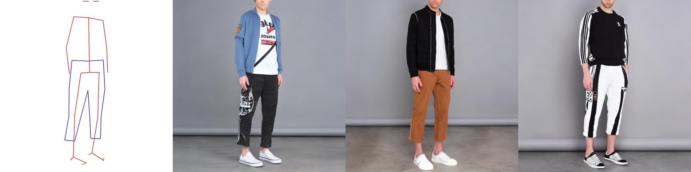
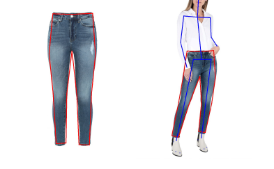
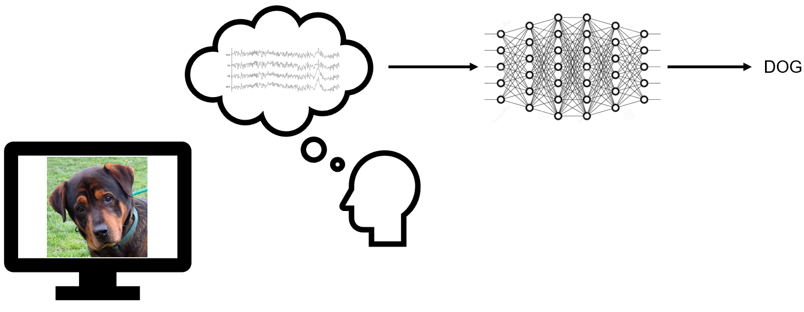

Hello, my name is Bastian Scharnagl. I'm a Research Scientist at Hof University of Applied Sciences supervised by
Prof. Christian Groth.
My main interests are Machine Learning, Computer Vision, and Generative AI, with a primary focus on image generation and its applications.
My main interests are Machine Learning, Computer Vision, and Generative AI, with a primary focus on image generation and its applications.
Research

Towards a size-aware implicit 2-D cloth rendering
Bastian Scharnagl, Christian Groth
AIxVR, 2025

KPNet: Towards a parameterized implicit 2d cloth rendering
Bastian Scharnagl, Christian Groth
IPAI, 2024

Evaluation of different deep learning approaches for EEG classification
Bastian Scharnagl, Christian Groth
AI4I, 2022
Hobby
Sesam: Smart Door Opener with Face Recognition and Android App with Quick Settings Tile
ProjectUART Library in C for embedded devices
Project